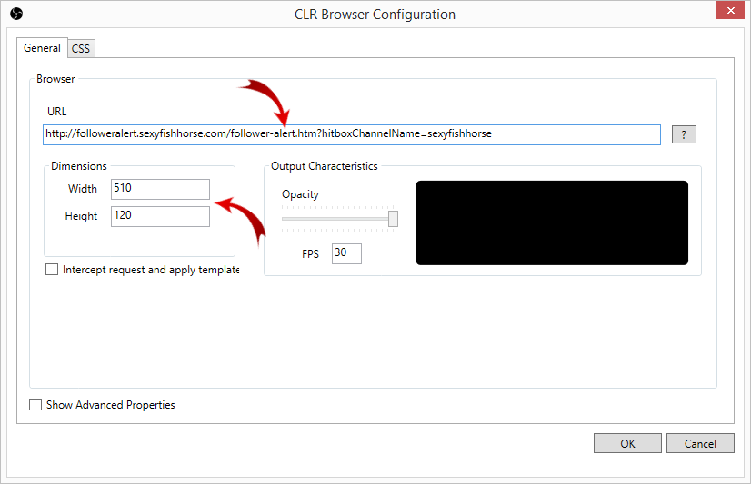

A follower alert for both Twitch and Hitbox.
I was looking around for a follower alert for my stream that listened to both Twitch and Hitbox but I couldn't find anything I thought was fairly easy to set up so I made my own. I have made this website available so you can use it too.
The setup and configuration is similar/identical to other follower alerts, such as i.e. NightDevs follower alert, so if you know how to set that up you know how to set this one up as well.
Once you have entered your settings for the follower alert you can either launch the follower alert right away and use i.e. window capture and chromakey to add it to your stream, or you can get the link directly and use a plugin for your stream software that loads data from a website (i.e. CLR Browser for OBS).
The website will remember your settings for when you return so if you've set it up before you can simply click " Launch"
If you have any feedback/bug reports/feature requests then go to GitHub and create an issue and I will have a look.
Integrate the follower alert with OBS
This guide assumes you already have OBS installed and you have a basic understanding on how to use the application.
Prerequisite: Download and install the CLR Browser Source Plugin for OBS.
Step 1:
Add a new "CLR Browser" source to a scene.
Step 2:
Paste in your generated follower alert url in the text box. Set the height to 120 and the width to 510.

Step 3 (optional):
If you want to customize your follower alert further, paste in your custom CSS here.
Here is your follower alert URL.
Further customize your follower alert.
This is the CSS the follower alert is using as default. You can copy and modify this for use with your favourite streaming software.
.follower-alert {
position: relative;
width: 500px;
height: 100px;
color: white;
font-family: "Lucida Grande", "Trebuchet MS", sans-serif;
text-align: center;
}
.follower-alert .name {
position: absolute;
width: 420px;
top: 37px;
left: 40px;
font-size: 40px;
line-height: 50px;
font-weight: bold;
text-shadow: 2px 2px #666666;
}
.follower-alert .provider {
position: absolute;
width: 420px;
left: 40px;
top: 12px;
font-size: 20px;
line-height: 20px;
text-shadow: 1px 1px #666666;
}The settings you enter here will be stored on your pc so you can start the follower alert instantly the next time you visit this site.
Add a custom background image to your follower alert.
Upload your image to an image hosting site that allows direct linking to images (i.e. imgur.com and copy the direct image link into the text box (i.e. http://i.imgur.com/Zb1XCVO.png).
The alert is built around my personal notification but you can customize it to your liking. This template is provided for your convenience so you can make your very own follower alert.
Step 1:
Go to imgur.com and click the "Upload images" button.
Step 2:
Upload the image using one of the options provided. Notice how your image is added to the list in the
bottom. Click "Start upload" when you're ready.
Step 3:
Copy the value in the "Direct Link" text field and paste it into the "Image link" text box on this website.
Add a custom sound to your follower alert
Upload your custom sound to a sound hosting service that allows for direct linking to the sound (i.e. as clyp.it) and copy the direct sound link into the text box (i.e. https://clyp.it/zunx1trj.ogg)
Step 1:
Go to clyp.it and upload your sound from the front page
Step 1:
Click "Advanced" and copy the value of the "Direct OGG Link" text field and paste it into the "Sound link" text
box on this site.